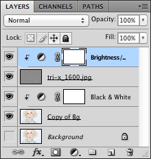
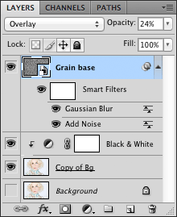

Film grain – Sort of
5 March, 2017 – Art. 11 – First published on Ka of Isis 140625
This project was doomed from the outset. I mean, attempting to simulate film grain with JavaScript? Hello? Anybody who has grown up with a Pentax Spotmatic, Tri-X and a bathroom turned darkroom knows that silicon can never replace silver. But I had to try, based on earlier attempts at creating noise programmatically. The fact that I ended up testing different methods of adding grain to images, only proves that I will not only step down when defeated but also that the experimental darkroom days are deeply ingrained (pun intended). And, yes, keep in mind that I am only interested in grain on black and white images here. I did mention Tri-X, did I not?
To prevent the impatient visitor from leaving this page on first sight, I present a visual conclusion up front and refer to the wordy tongue-in-cheek description of methods further down. Use the buttons 0–5 to toggle between the various images, with or without grain, and observe the different comments below each image.
Fig. The original image has been slightly cropped in Photoshop and saved at 72 ppi for web and devices with a JPEG quality-setting of 51. It is shown here for reference only.
Fig. Method 1 – If you see no grain in the picture, your browser probably does not support the canvas element. The backdrop for the grain is the default black and white image generated by the TrueGrain method (button 2a).
Fig. Method 2 – Black and white version with TrueGrain not yet enabled. The image has been saved at 72 ppi for web and devices with a JPEG quality-setting of 100.
Fig. Method 2 – TrueGrain enabled. The image has been saved at 72 ppi for web and devices with a JPEG quality-setting of 100.
Fig. Method 3 – A default black and white version of the original photograph, with no grain enabled. The image has been saved at 72 ppi for web and devices with a JPEG quality-setting of 100.
Fig. Method 3 – ‘Grainsnap’ enabled. The image has been saved at 72 ppi for web and devices with a JPEG quality-setting of 100.
Fig. Method 4 – ‘Red Wing Digital’ grain enabled on the same default black and white image used in Method 3. The resulting image has been saved at 72 ppi for web and devices with a JPEG quality-setting of 100.
Fig. Method 5 – Pure, coarse Photoshop grain enabled on the same default black and white image used in Method 3. The resulting image has been saved at 72 ppi for web and devices with a JPEG quality-setting of 100.
Fig. The strikingly beautiful original image used in these experiments – RGB 1024x678 px 240 ppi JPG – was published by geishaboy500 on Flickr and is used under a Creative Commons Attribution 2.0 Generic license.
Method 1 – JavaScript and the canvas element
Please refer to the article Noisy background – Static for my inspiration and take a look at the page source for technical details.
Even at this early stage I knew that the battle was lost. There is no subtleness in the details of the ‘grain’, just a bunch of randomly spattered dots on the canvas. One plays with the JavaScript settings to no avail. Adding insult to injury, the computer-generated noise is processor taxing. Combine a large intensity setting and a large image, and the browser may very well crash.
Method 2 – TrueGrain
TrueGrain from Grubba Software is a commercial application which uses a grain library to ‘accurately’ simulate black and white film emulsions for digital photography – very much of interest to photographers whose photographs end up on the printing press. Combinations of film stock – say, Ilford FP4 Plus, film grain – say, 110 17mmx13mm, and filter profile – say, Wratten 21 Orange, are possible, and further tweaking can yield unique results.
For this exercise a Kodak Pan 400 120 film type with 135 36mmx24mm grain, no filter, was tested on the software’s default black and white rendering of the original image.
Method 3 – www.grainsnap.com
1. Download free grain images – 1500x994 px 72 ppi – from Grainsnap.
2. In Photoshop, open the original image (the one that is to be manipulated).
3. Crop to final dimensions, in this case 960x620 px. Keep resolution.
4. Jump-copy the background layer and make the background layer invisible (this is a working habit, not a necessity).
5. To ‘convert’ the RGB image non-destructively to black and white, go:
Layer > New Adjustment Layer > Black & White…
In the New Layer dialogue window, mark Use Previous Layer to Create Clipping Mask.
Alternatively, click on the Create New Fill or Adjustment Layer button in the bottom of the Layers panel and choose Black & White…. Then Alt-click on the border between the newly created layer and the black and white layer below it to create a clipping mask.
6. If needed, adjust the grayscale image with the sliders in the Adjustments panel. For this exercise, the default settings were kept.
7. To simulate 35 mm film grain, first open Grainsnap’s free 400-ISO-GRAINSNAP.jpg image, then, with Photoshop’s Move Tool, shift-drag the grain from this image onto a new layer above the adjustment layer in the original image.
An alternative to the drag and drop technique, is to go:
File > Place…
and place the contents of 400-ISO-GRAINSNAP.jpg as a Smart Object above the adjustment layer in the original image. The downside to this method is that Photoshop may already suggest a resizing of the placed image.
Depending on size differences between the images, it may be necessary to scale the grain in the newly created grain layer. Note, however, that this will resize the grain ‘particles’ and ultimately influence the grainy look of the final image. Additional blurring/sharpening of the grain layer will also yield different results.
In this example, the drag and drop method was employed, and the grain completely covered the original image – with grain to spare. I did not want to experiment with smaller or larger grain particles, so no resizing was done.
8. In the Layers panel, change the blending mode for the grain layer from Normal to Overlay.
9. Layer > New Adjustment Layer > Brightness/Contrast…
In the New Layer dialogue window, mark Use Previous Layer to Create Clipping Mask.
Or follow the alternate procedure described in step 4.
10. Raising the Contrast slider in the Adjustments layer increases the grain visibility. Lowering the contrast makes the grain more subtle. For this test, contrast was set to a value of 66 and Use Legacy was kept.
Fig. Method 3 – The final Layers panel.
Method 4 – www.redwingdigital.com
This method echoes Method 3 almost to the letter. The only differences are the grain image itself and a contrast value of -12.
Red Wing Digital offers two grain images, one to simulate Kodak Tri-X 1600 film and one to simulate Kodak T-Max 3200. Both images are actual scans of an 18% gray reference card shot with these black & white films. The former was tested for this article.
John Becker of Red Wing Digital suggests a simple grayscale conversion or desaturation of any original colour image, but I prefer the non-destructive method outlined in Method 3, Step 5.
Fig. Method 4 – The final Layers panel.
Method 5 – www.photoshoptutorials.ws
This more or less parrots a prescription in the article Natural Film Grain on the Photoshop tutorials web site. A few steps have been added, however, to allow for non-destructive addition of filters.
1. Complete steps 2 through 6 as described above in Method 3.
2. Create a new layer above the adjustment layer and rename the new layer Grain base.
3. Hit a Shift-Delete key combination, or go Edit > Fill…, to bring up the Fill dialogue window.
For Contents, use 50% Gray.
Fig. Method 5 – The Fill dialogue window.
4. Convert the layer to a Smart Object.
5. Filter > Noise > Add Noise…
Try the following parameters in the Add Noise dialogue window:
Fig. Method 5 – The Add Noise dialogue window.
Note that a non-destructive Smart Filters sub-layer has been added to the Base grain layer.
6. Still with Base grain the active layer, go:
Filter > Blur > Gaussian Blur…
Try the following radius in the Gaussian Blur dialogue window:
Fig. Method 5 – The Gaussian Blur dialogue window.
Note that such a low blur value will produce a rather coarse grain and is tested purposely here.
7. Change the blending mode for the Base grain layer from Normal to Overlay.
8. Reduce the opacity of the layer from 100% to 24%.
Fig. Method 5 – The final Layers panel.
9. Retrace the steps and tweak settings for opacity and/or smart filters to suit your needs or ego.
Notes: This article never set out to compare methods, only to show available alternatives. Neither has much effort been invested in optimizing settings for a ‘perfect’ end result. Already the grayscale images resulting from using default settings in both the TrueGrain app (button 2a) and in Photoshop (button 3a), yield quite different images even before simulated film grain is added. TrueGrain is dedicated to black and white images while ‘Grainsnap’, for instance, is equally comfortable with RGB or CMYK. The final black and white images have been saved with the ridiculously high JPEG setting of 100 only so that compression should not influence on the visual results. Much as I would have preferred the TIF-format, few browsers support it these days. To compensate for prolonged loading times, JavaScript preloading has been employed.